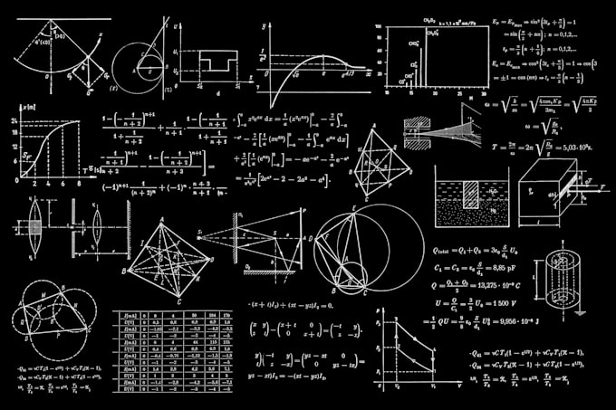

Top Science Story
April 14, 2026Google Celebrates World Quantum Day With an Interactive Doodle That Brings Quantum Physics to Everyone
On April 14, World Quantum Day, Google's homepage transforms into an educational experience, making quantum computing accessible to millions worldwide.
Google unveiled a special interactive doodle on Tuesday to celebrate World Quantum Day, a globally recognized date that promotes awareness and education around quantum science. The doodle invites users to explore fundamental quantum concepts — including superposition, entanglement, and quantum gates — through animations and mini-challenges accessible to all ages and backgrounds.
Scientists and engineers from around the world marked the occasion by releasing new research papers and hosting public events. The celebration reflects the rapidly growing importance of quantum computing as a technology that could revolutionize fields including medicine, cryptography, and artificial intelligence.
"Quantum computing is no longer a distant dream — it is rapidly becoming part of the technological infrastructure that will shape the next decade."
— Technology Researcher, World Quantum Day 2026Tech analysts believe that within the next ten years, quantum computers could help researchers solve complex problems in drug discovery, climate modeling, and financial analysis that current classical computers cannot address efficiently. Educational organizations are partnering with technology companies to bring quantum literacy to schools worldwide.

Quantum processors operate at temperatures colder than outer space, using qubits to perform complex calculations.
More Science & Tech
Scientists Find That Biodiversity Protection Could Reverse Environmental Damage
A new study by international biologists and ecologists suggests that active conservation policies can help ecosystems recover from decades of human impact.
According to data collected across multiple biomes, ecosystems that received legal protection and active conservation management showed measurable recovery within five to ten years. Researchers believe governments that implement conservation policies now could see significant ecological improvements by 2035.
Artificial Intelligence Transforms the Workplace — What It Means for Dominican Workers
As AI tools become more prevalent, labor experts and economists are analyzing how automation will affect employment patterns in the Dominican Republic.
A technology researcher explained that while AI creates new categories of jobs in software development and data management, it also displaces roles in routine administrative and manufacturing work. Education systems must adapt to prepare students for an AI-powered economy.
Dominican Republic Expands Renewable Energy Infrastructure With New Solar Projects
Government and private sector partnerships are driving investment in solar and wind energy installations across multiple provinces.
The Ministry of Energy and Mines confirmed that new projects will add significant clean energy capacity to the national grid. Engineers estimate these installations could reduce the country's dependence on imported fossil fuels by up to 20% within the next three years.